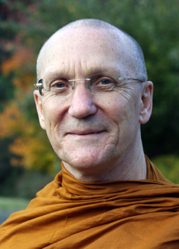

Page: 1 2 3 4 5 6 7 8 9 10 11 12 13 14 15 16 17 18 19 20 21 22 23 24 25 26 27 28 29 30 31 32
1. “In working with the Four Noble Truths, to understand suffering, does the Buddha mean knowing for instance the pain in your heart, the stress around your eyes, or does he also mean to see with insight its karmic effect on yourself and others?” [Four Noble Truths] [Noble Truth of Suffering] [Kamma] // [Suffering] [Pāli] [Happiness]
2. “To abandon the cause, does it mean in that moment or completely?” [Cause of Suffering ] // [Memory]
3. “All the stories you told us this morning made me realize the fact that what we are seeking is just right here in our mind. What do you think?” [Nature of mind]
Quote: “It’s all here! (pointing to his heart)” — Ajahn Khao to Ajahn Sumedho. [Ajahn Khao] [Ajahn Sumedho] [Heart/mind] [Ajahn Chah] [Ajahn Mahā Amorn]
4. “Could you talk more about the two levels of understanding the true nature of karma: mundane and transcendent?” [Kamma] [Conventions] [Unconditioned] // [Right View ] [Four Noble Truths] [Impermanence] [Conditionality]
Quote: “Outside of cause, beyond effect; outside of suffering, beyond happiness.” — Ajahn Chah. [Ajahn Chah]
5. “Competitiveness feels so pervasive here in America. What are your thoughts for working with it or healing it?” [Competitiveness ] [Culture/West] // [Suffering] [Self-identity view] [Relinquishment] [History/America] [Proliferation]
Reflection: The nine bases of conceit. [Conceit]
6. “Could you describe the progression of anagārika and sāmaṇera training?” [Sequence of training ] [Postulants] [Novices] [Abhayagiri] // [Eight Precepts] [Not handling money] [Ordination ] [Saṅgha decision making] [Dependence] [Ajahn Chah monasteries]
7. “The Middle Way – It is not 50% becoming and 50% annihilation, right? What is it the middle of?” [Middle Path ] // [Suffering] [Cessation of Suffering]
8. “Toward the end of this morning sitting meditation, my body started shaking from left to right for about a minute or so. While this was happening, I was observing it without getting panicked or trying to stop it and then it stopped shaking. How do you explain this experience?” [Meditation/Unusual experiences] // [Impermanence] [Mindfulness] [Happiness]
9. “In this afternoon’s talk, Ajahn Karuṇadhammo mentioned the benefits of the bhava that results from practice or the Eightfold Path, but he described a consciousness that doesn’t land in or on a self and results in freedom. Is that a consciousness that results in neither arising nor non-arising. Could you elaborate? The moment between in and out breaths seems to hold potential for this kind of consciousness.” [Eightfold Path] [Becoming] [Unestablished consciousness] [Self-identity view] [Liberation] [Mindfulness of breathing] // [Proliferation] [Consciousness] [Relinquishment] [Fear]
Quote: “You want to pay attention to the experience rather than the idea about it.” [Direct experience]
Suttas: DN 11.85, MN 49.25: Consciousness luminous all around.
Sutta: SN 12.64: Simile of the western wall. [Similes]
10. “Did the Buddha perform any miracles?” [Psychic powers ] [Buddha]
Sutta: Sutta AN 3.60: The greatest miracle is teaching the Dhamma. [Dhamma] [Right View]
11. “Can the monastics speak about the skillful use of caffeine for their practice?” [Medicinal requisites] // [Energy] [Ajahn Pasanno] [Ajahn Sumedho]
12. “Can you please explain the āsavas?” [Outflows ] // [Rebirth] [Suffering] [Translation]
13. “Please speak a little about kataññu.” [Gratitude ] // [Human] [Pāli] [Merit]
Reference: Amaravati Chanting Book, p. 33: Verses of Sharing and Aspiration
Story: Ajahn Liem gives Abhayagiri a handwritten essay about gratitude. [Ajahn Liem] [Wat Pah Pong] [Ajahn Chah] [Personality] [Generosity] [Abhayagiri] [Asking forgiveness ceremony] [Dhamma books]
Reference: English translation: Gratitude by Ajahn Chah Saṅgha, p. 9.
14. “This retreat has greatly reinforced my gratitude for this birth and for my ability to practice the Dhamma. Especially as I am ageing, I feel more of an urgency to awaken. Unfortunately, I live in a small town on the central coast, and there are no Buddhist centers within hundreds of miles. How can I continue to deepen my practice in the absence of a living teacher?” [Gratitude] [Spiritual urgency] [Long-term practice] [Teachers] // [Dhamma online] [Abhayagiri] [Dhamma books] [Monastic routine] [Meditation groups] [Lunar observance days]
15. “Is it useful to investigate how we can only experience one conscious moment at a time?” [Consciousness] [Sense bases] [Nature of mind] [Investigation of states] // [Impermanence] [Feeling]
The manifestation of skillful and unskillful states. [Skillful qualities ] [Unskillful qualities ] [Suffering] [Happiness] [Restlessness and worry] [Unwholesome Roots] [Right Intention] [Discernment]
16. “In Hinduism, there is a belief that we choose our parents in order to work through some kamma. Is there a similar belief in Buddhism? How much volition can we exert over future rebirths?” [Hinduism] [Parents] [Kamma] [Rebirth] [Volition] // [Conditionality] [Ajahn Chah]
Quote: “What happens in daily life—the same thing happens after we die.” [Habits] [Death]
1. “I was just reading a talk of Ajahn Chah’s. He mentions ‘vipassanu.’ Could you explain this more?” [Ajahn Chah] [Insight meditation] // [Defilements of insight]
2. “An ajahn visiting Abhayagiri spoke of you receiving an honor. Would you elaborate on what it was, who bestows it, and what it means for you and the community?” [Chao Khun] [Ajahn Pasanno] [Abhayagiri]
Ajahn Pasanno describes the Chao Khun titles he and Ajahn Amaro will receive. [Ajahn Amaro] [Culture/Thailand] [Forest versus city monks] [Ajahn Chah] [Royalty]
3. “Could you talk a bit about the kilesas? How to see them clearly and work with them skillfully without falling into discouragement and self-judgment?” [Unwholesome Roots ] [Right Effort] [Guilt/shame/inadequacy] // [Mindfulness] [Discernment] [Recollection/Virtue] [Perception]
4. “Can you repeat the Thai words for ‘Is it worth it?’ that you mentioned this morning? I’d like to use it as a mantra.” [Thai] [Mantra]
5. “Are there any suttas in the Majjhima Nikāya that you recommend that lay people study?” [Sutta] [Learning ] [Lay life]
6. “Can you give me some ideas for antidotes to restlessness? So far the best I have is to give myself a set time and not move one iota from sitting or standing. Another is not to fight it but use it for imaginative contemplation.” [Restlessness and worry ] [Determination] [Recollection] // [Perfections] [Patience] [Directed thought and evaluation] [Happiness] [Mindfulness of body] [Mindfulness of breathing] [Tranquility]
Quote: “It’s the continuity of wholesome mental states that allows the mind to become settled and steady.” [Skillful qualities]
7. “Why is the Buddha referred to in the present tense in the chants? Is it because we are referring to the present potential within us?” [Buddha ] [Chanting] // [Three Refuges] [Liberation] [Knowing itself] [Ajahn Chah]
8. “When bowing three times, do you say something in your mind like taking refuge or anything else?” [Bowing] [Three Refuges] // [Ajahn Pasanno] [Mindfulness of body] [Buddho mantra]
9. “Can you say more about trusting the seeds of meditation practice after Alzheimer’s/dementia kick in? What do you mean by going beyond liberation or consciousness? What do you mean by ‘many deeper layers’ are affected by the practice and the fruits of it will express naturally?” [Sickness ] [Consciousness] [Long-term practice] // [Happiness] [Proliferation] [Relinquishment] [Self-identity view]
Story: A monk with psychic abilities investigates Ajahn Chah’s mind after Ajahn Chah loses his mental faculties. [Ajahn Phut] [Ajahn Chah] [Psychic powers]
Story: Ajahn Pasanno brings the Wat Pah Nanachat community to Ajahn Chah’s nursing kuti to chant verses including Dependent Origination. [Wat Pah Nanachat] [Ajahn Pasanno] [Chanting] [Dependent origination]
Quote: “The fruits of practice arise through the simple quality of being the one who knows, taking the Buddha as refuge.” [Knowing itself] [Buddha] [Three Refuges]
10. “After forty years of meditating, what do you still find that is interesting?” [Ajahn Pasanno ] [Long-term practice] // [Mindfulness of breathing] [Gladdening the mind] [Learning]
Quote: “Practicing Dhamma … sometimes it’s difficult, but it’s always interesting.” [Practicing in accordance with Dhamma] [Purpose/meaning]
11. “I am so grateful for the peace I am developing here and in my life. It feels like a refuge. Is it the fourth refuge?” [Tranquility] [Gratitude] [Three Refuges] // [Buddha images]
Quote: “That farang Buddha is really like a farang. He’s really tense and stressed.” — Ajahn Chah. [Ajahn Chah] [Culture/West ] [Ajahn Sumedho] [Thai] [Restlessness and worry] [Humor]
12. Comment: Several months ago, I started to use the phrase: ‘I’d rather be loved than right.’ This small shift has had a tremendous impact in my life as I relinquish my need to be right, to control and to assert my ego into things. [Relinquishment] [Views]
Response by Ajahn Pasanno. [Culture/West] [Idealism] [Winnie-the-Pooh]
13. “How important is chanting for one’s practice? Do you have any tips for how to recite/remember the Pāli chants?” [Chanting ] [Memory] [Pāli] // [Monastic life] [Recollection] [Devotional practice] [Energy] [Thai Forest Tradition] [Long-term practice] [Dhamma recordings] [Posture/Walking] [Almsround] [Mindfulness]
Story: Ajahn Mun would chant for over an hour each evening before he started meditating. [Ajahn Mun] [Monastic routine]
Suttas: AN 10.60 Girimānanda Sutta; SN 56.11: Dhammacakkappavattana Sutta (Chanting Book translation).
Story: The evening program at Wat Fah Krahm is three hours of chanting followed by a three-hour sit. [Wat Fah Krahm] [Meditation] [Ajahn Kovilo]
Reference: Amaravati Chanting Book, p. 138: Rhythm of the Pāli language.
Sutta: SN 48.9: Mindfulness related to memory.
1. “I’m having a hard time with alcohol (not here!). Not heavy or even daily use; a glass of wine with dinner a few nights a week or at social events. I would like to stop but have a hard time sustaining for more than a month or so. Any words of encouragement?” [Intoxicants ] // [Determination] [Sense restraint] [Benefit/gratification]
2. “When you spent time with family, did you notice any old habits resurfacing?” [Ajahn Pasanno] [Family] [Habits]
3. “Can you please speak about faith? How to develop it? How to maintain it through the ups and downs of practice? How have you maintained your faith over forty years of practice?” [Faith ] [Long-term practice] [Ajahn Pasanno] // [Language] [Ajahn Chah] [Patience] [Mindfulness]
4. “I was wondering if the merit we have done for meditation practice can be dedicated to the people (dead or alive) we pray for? How do we know it? Also, I have heard that the merit from practicing meditation will accumulate and stay with ones who have practiced that, which also carries over throughout the life or the subsequent incarnations. Can you clarify this?” [Merit] [Prayer] [Rebirth] // [Theravāda] [Mahāyāna] [Vajrayāna] [Science] [Faith] [Selfishness]
Stories told by Ajahn Paññānanda about dedication of merit. [Ajahn Paññānanda] [Culture/Thailand] [Superstition] [Death]
5. “I understand that there is a council of Theravāda elders who are a ‘decision making panel’ guiding the tradition. Who exactly is part of this council and who or what determines their eligibility? Will the honor being bestowed upon you and Ajahn Amaro next month make you eligible? Are there other monks in modern times who have received this honor?” [History/Thai Buddhism] [Saṅgha decision making] [Chao Khun] [Ajahn Pasanno] [Ajahn Amaro] [Ajahn Chah] // [Politics and society] [Ajahn Buddhadāsa] [Ajahn Mahā Boowa] [Ajahn Sumedho] [P. A. Payutto] [CALM Group]
6. “If I remember correctly, you said with practice what can be realized is not so much the abandonment of the self but the misperception of a self given there has never been a self to be abandoned, correct?” [Not-self] // [Clinging] [Doctrine-of-self clinging] [Self-identity view] [Aggregates]
Sutta: MN 72.15: I-making and my-making (aṅkārama-maṅkāra). [Conceit]
7. “Can you give a concrete description of how you recollect or contemplate? What’s going on in your mind while you do it? What resources or mental formations do you use?” [Recollection] // [Learning] [Four Noble Truths] [Right Effort] [Directed thought and evaluation]
Quote: “The most effective contemplation takes place when the mind is still.” [Tranquility]
8. “What chants would you recommend as suitable to use for patients who may be in hospice or close to death? Can Buddhist monks give last rites?” [Death] [Chanting] [Ceremony/ritual] // [Goodwill] [Three Refuges] [Protective chants] [Culture/Thailand] [Buddho mantra] [Recollection/Saṅgha]
Story: Ajahn Chah requests an army truck to pick up Por Puang’s body. [Ajahn Chah] [Wat Pah Pong] [Contentment] [Mutual lay/Saṅgha support] [Recollection/Death]
Reference: Stillness Flowing by Ajahn Jayasaro, p. 662.
9. “The Buddha said that vedanā is either pleasant, unpleasant, or neither. Contemplating papañca, I noticed that it felt comfortable – familiar and unthreatening. Would a better way to ‘neither pleasant nor unpleasant’ be ‘comfortable’ rather than ‘neutral?’” [Feeling] [Proliferation] [Neutral feeling] // [Conditionality] [Delusion]
10. “Can you tell us what you find interesting about the breath? What insights have arisen for you from watching the breath?” [Mindfulness of breathing] [Ajahn Pasanno]
11. “Do you have any tips for embodying the Dhamma in business situations when negotiating with aggressive individuals? I tend to walk away at a certain point, but am wondering if there’s another way to turn it around, make it better for everyone?” [Dhamma] [Work] [Right Speech] // [Goodwill] [Trust] [Clear comprehension] [Truth]
12. “Have you ever put a publication together on the retreat questions? Are the talks of this retreat being recorded?” [Meditation retreats] [Questions] [Dhamma recordings] // [Internet] [Dhamma books]
Reference: Abundant, Exalted, Immeasurable by Ajahn Pasanno transcribes the talks and questions from the 2008 Metta Retreat.
13. “For decades, I believed the suffering was the food itself–that cake, that pastry, more food, another bowlful. But now I understand dukkha is not ‘the thing.’ It is the overwhelming craving, the feeling itself. And now that the dukkha is understood, how do I tolerate that feeling?” [Food] [Suffering] [Craving] [Noble Truth of Suffering] [Patience]
14. “Is it possible to meditate on forgiveness for someone who died many years ago? Does forgiveness reach that person on some level, or is it more a matter of showing compassion towards myself?” [Forgiveness] [Compassion] // [Kamma]
15. “Could you explain what your ordination names mean and how they were chosen?” [Ordination] [Monastic titles] // [Ajahn Karuṇadhammo] [Ajahn Ñāṇiko] [Ajahn Pasanno]
16. “How does the process work to get a title as you do? Is this title only for monks? Will you be the only one in the USA?” [Chao Khun] [Ajahn Pasanno] // [Ajahn Ṭhānissaro] [Abhayagiri]
17. “I understand that our genetic disposition can’t be changed, but epigenetics say that their expression can be modified by changing lifestyle. In a similar way, our kamma is given but your teachings say the expression and effects can be changed by practice. Please comment.” [Science] [Health] [Kamma]
18. “I often feel overwhelmed with the greed, hatred, ill-will, and delusion that the corporate world exerts over the masses to the benefit of only themselves and that is destroying the planet’s ability to renew itself. Could you speak about Buddhist involvement in social change movements?” [Politics and society] [Activism] [Unwholesome Roots] [Commerce/economics] [Selfishness] [Environment] // [Truth] [Ajahn Pasanno] [Non-profit organizations]
Ajahn Pasanno reflects on the results of his efforts to preserve forests in Thailand. [Geography/Thailand] [Learning] [Greed] [Corruption]
Quote: “Can I set an example myself and can I help encourage other people who are interested?”
19. “Who are the most senior monks in the Theravāda/Thai Forest Tradition? Can you speak about the lineage? Are there Thai teachers of your seniority who come to the West?” [Theravāda] [Thai Forest Tradition]
Quote: “Sometimes people assume that the Thai Theravāda Forest Tradition is one thing. – No.” [Culture/Thailand]
20. “What is the pill in the little vial that sits next to you?” [Ajahn Pasanno] [Medicinal requisites] [Health]
21. “I have attended many deaths and that last breath appears to be really difficult to relinquish. Does this training really help? I have trouble relinquishing the small aches and pains in my body.” [Death] [Relinquishment] [Long-term practice] [Pain]
Quote: “The holding on is way more painful than the relinquishing.” [Clinging] [Suffering]
22. “In the Ānāpānasati Sutta, what is meant by ‘breathing in/out tranquilizing the mental formation?’” [Mindfulness of breathing] [Volitional formations] // [Translation]
23. “Can you recommend a reflection or phrase to use immediately upon awakening in the morning or the last thing before sleep?” [Recollection] // [Buddho mantra ] [Recollection/Buddha] [Ajahn Chah]
24. “I’m curious about the ceremony to bestow the honorific title. What does it entail? What is the new title? Does it change the appropriate way for us to address or refer to you?” [Monastic titles] [Ajahn Pasanno] [Ceremony/ritual] // [Chao Khun] [Chanting]
25. “If one were to choose a life partner who was not practicing the Dhamma as we know it but had some spirited lightness about them, what are some qualities we should look for in them that would make them a good partner?” [Relationships] // [Faith] [Virtue] [Generosity] [Discernment]
26. “What did you plan to say [on this retreat]?” [Teaching Dhamma] [Meditation retreats] // [Ajahn Chah]
27. “Do you think it’s possible to experience Nibbāna before becoming fully awakened - ‘moments of enlightenment?’ But if Nibbāna is beyond consciousness, would you remember that it happened?” [Nibbāna] [Stages of awakening] [Consciousness] // [Stream entry ]
28. “Is there a way to measure concentration, mindfulness, and awareness?” [Right Mindfulness] [Right Concentration] [Present moment awareness] // [Tranquility] [Happiness]
[Session] Reading: “Apaṇṇaka Dhammas,” Don’t Hold Back by Ajahn Pasanno, pp. 71–81. Read by Ajahn Karuṇadhammo. [Incontrovertible practices]
[Session] Reading: “Cultivating Gratitude” by Ajahn Pasanno in Gratitude by Ajahn Chah Saṅgha, p. 53. Read by Tan Jāgaro. [Gratitude]
3. Recollection: Ajahn Pasanno consults the group rather than dictating decisions. Recounted by Ajahn Jotipālo. [Ajahn Pasanno] [Abbot ] [Abhayagiri] [Saṅgha decision making] [Leadership]
Quote: “Sometimes it’s better to be harmonious than to be right.” — Ajahn Pasanno. [Communal harmony] [Views]
Quote: “I must hurry, for there they go, and I am their leader.” — Sign above a boss’s desk. Quoted by Ajahn Karuṇadhammo. [Humor]
1. Ajahn Pasanno delights in Ajahn Sumedho’s ability to share Dhamma. [Ajahn Sumedho] [Teaching Dhamma] [Empathetic joy]
2. Quote: “Sumedho will teach you about Nibbāna. I can teach you how to look after your bowl.” — Ajahn Chah to young Ajahn Vajiro. [Ajahn Chah] [Ajahn Vajiro] [Ajahn Sumedho] [Nibbāna] [Almsbowl] [Protocols]
3. “Can you recommend a book of koans for inspiration?” [Zen] [Koan] [Dhamma books] // [Ajahn Sumedho] [Hua tou] [Master Hsu Yun]
Story: Ajahn Chah encourages Ajahn Sumedho to develop the hua tou technique. [Ajahn Chah] [Mahasi Sayadaw] [Ven. Ñāṇatiloka]
Reference: Word of the Buddha by Venerable Ñāṇatiloka.
4. Story: Harata Rōshi’s response to a question about koans. Told by Ajahn Jotipālo. [Harata Rōshi] [Koan] // [Translation]
Response by Ajahn Pasanno. [Knowing itself]
1. Question about the idea of punishment in the Vinaya. [Vinaya] [Disciplinary transactions] // [Thai] [Translation] [Kamma]
2. “Where does the story in the reading come from?” [Stories] // [Commentaries]
Reference: “Khanti – Patient Endurance” from The Real Practice by Ajahn Jayasaro, p. 20.
3. “Could you give some guidance on when to patiently endure and when to use discernment to deal with something?” Answered by Ajahn Pasanno, Ajahn Karuṇadhammo and Ajahn Jotipālo. [Patience ] [Discernment] // [Right Effort] [Skillful qualities] [Unskillful qualities]
Story: A fortune teller reads Ajahn Chah’s palm. Told by Ajahn Pasanno. [Ajahn Chah] [Aversion]
2. “Did Ajahn Chah emphasize generosity and service more for Westerners than for Thais?” [Ajahn Chah] [Generosity] [Service] [Culture/West] // [Culture/Thailand]
4. “How has work with prisoners affected Ajahn Khemadhammo?” Answered by Ajahn Pasanno and Ajahn Jotipālo. [Ajahn Khemadhammo] [Prisons] // [Determination] [Service] [Truth]
5. “Where does Ajahn Khemadhammo live?” [Ajahn Khemadhammo] // [Mutual lay/Saṅgha support]
6. Story: Ajahn Khemadhammo creates Buddha groves in prisons. [Ajahn Khemadhammo] [Prisons] [Buddha images] // [Ceremony/ritual] [Ajahn Pasanno] [Tranquility]
7. Story: The inmate leading the Buddhist group was caught selling drugs. [Ajahn Khemadhammo] [Prisons] [Intoxicants]
Comments about intoxicants, crime, and prisons. Contributed by Beth Steff and Ajahn Pasanno. [Crime]
1. “Is Ajahn Sumedho saying that art is always coming from a place of ego?” [Artistic expression] [Self-identity view] // [Doubt]
Quote: “How do we respond to doubt? … out of fear, out of worry? How do we try to make things certain and sure? That’s what we have to figure out.” [Fear] [Impermanence]
2. Comment about the arising of self even in abstract thought. Contributed by Ajahn Kaccāna. [Proliferation] [Self-identity view]
Response by Ajahn Pasanno. [Cause of Suffering]
3. Comments by Ajahn Jotipālo, Ajahn Pasanno and Ajahn Ñāṇiko about self in creative endeavors. [Artistic expression ] [Self-identity view] // [Christianity] [Discernment] [Tranquility] [Buddha/Biography] [Ajahn Liem]
Reference: “Inner Vigilance” from The Anthology Vol. 2 by Ajahn Sumedho pp. 59-62. An older version is available online in Mindfulness: The Path to the Deathless.
1. “At what point does it become unskillful to continue to reflect on one’s own good deeds?” Answered by Ajahn Pasanno and Beth Steff. [Recollection/Virtue] [Unskillful qualities] // [Self-identity view] [Right Effort] [Recollection/Generosity] [Culture/West] [Christianity] [Guilt/shame/inadequacy]
Quote: “In Buddhism, we don’t believe in original sin. We believe in original purity.” — King Rama IX to a BBC interviewer. [King Rama IX] [Nature of mind]
Reference: The 1979 BBC interview on YouTube.
Commentary: Path of Purification by Bhikkhu Ñāṇamoli, p. 104: Forty subjects of meditation.
Story: Western researchers find Tibetans who have been tortured don’t suffer post-traumatic stress. [Abuse/violence] [Vajrayāna] [Three Refuges] [Compassion]
Story: God’s finger over the “Smite” button. [God] [The Far Side]
Comment by Ajahn Karuṇadhammo: The Dalai Lama emphasizes the effect of faith in the law of kamma. [Dalai Lama] [Kamma] [Faith]
Response by Ajahn Pasanno. [Right View]
2. Discussion about evaluating the results of practice. [Meditation/Results] [Right Effort] // [Faith] [Investigation of states] [Self-identity view] [Not-self]
Comment: I notice that I have preconceptions about the way I evaluate my practice.
Response: Ajahn Pasanno distinguishes between investigation and evaluation.
The very pattern, “What will make me good enough?” is suffering. Comment by Ajahn Kaccāna. [Habits] [Cause of Suffering]
Response by Ajahn Pasanno.
Story: Aversion towards the nada sound and the importance of having a teacher. Told by Ajahn Jotipālo. [Teachers] [Ajahn Jotipālo] [Sound of silence] [Aversion] [Insight Meditation Society] [Ajahn Amaro]
1. “Ajahn Pasanno, did you have a chance to spend much time with Ajahn Paññāvaḍḍho?” [Ajahn Paññāvaḍḍho] [Ajahn Pasanno]
2. “Can you say anything about the “voice of dhamma” Ajahn Paññāvaḍḍho describes [in the reading “Self“] versus the voice we hear inside our head? is it like the voice of conscience?” [Dhamma] [Conscience and prudence] // [Knowing itself]
[Session] Reading: “Attammayata,” The Island by Ajahn Pasanno and Ajahn Amaro, pp. 113-124. Read by Ajahn Khantiko. [Non-identification]
1. “Can you provide guidance on the contemplation of conceiving, and name and form?” [Conceit] [Aggregates] [Proliferation] // [Suffering] [Nature of mind] [Advertizing] [Impermanence] [Relinquishment] [Non-identification] [Four Noble Truths]
Sutta: Ud 3.10: “For however one conceives it, it is always other than that.”
Quote: “The mind is a liar and a cheat.” — Ajahn Chah. [Ajahn Chah] [False speech]
Reference: Ajahn Buddhadāsa’s Nine Eyes, The Island by Ajahn Pasanno and Ajahn Amaro, p. 116. [Ajahn Buddhadāsa] [Characteristics of existence]
Sutta: Ud 1.10 Bāhiya Sutta: “In the seen there is only the seen …” [Sense bases] [Perception]
Quote: “You can hurt yourself even with really good tools.” [Meditation/Techniques] [Right Effort]
2. “Can you restate Luang Por Dune’s rendering of the Four Noble Truths?” [Ajahn Dune] [Four Noble Truths] // [Thai]
3. “What does the phrase “beyond good and evil” mean in reference to the mind of an arahant?” [Arahant] [Skillful qualities] [Unskillful qualities] // [Thai]
Quote: “Above cause, beyond effect. Above good, beyond evil. Above merit, beyond demerit.” — Ajahn Chah. [Ajahn Chah] [Conditionality] [Merit]
1. “Do the Thai Forest masters emphasize hair, teeth, nails, and skin in their body contemplation because those are more obvious to cultivate?” [Thai Forest Tradition] [Mindfulness of body] [Unattractiveness] // [Ordination]
2. “Do you contemplate the body before you contemplate mind?” [Thai Forest Tradition] [Mindfulness of body] [Mindfulness of mind] // [Culture/West] [Nature of mind] [Sense bases] [Aggregates]
Follow-up: “Do you need to let go of the body before you can go deep into the mind?”
3. “When you are sick, the body is not happy, so it is not that easy to meditate, right?” [Sickness] [Happiness] [Meditation]
5. Story: Ajahn Kalyāno instructs monks to memorize the organs while watching an autopsy. Told by Ajahn Jotipālo. [Ajahn Kalyāṇo] [Unattractiveness] [Mindfulness of body] // [Aversion]
Response by Ajahn Pasanno. [Disenchantment] [Dispassion] [Skillful qualities]
1. “I’m half expecting the earth to shake.” Comment by Ajahn Ñāṇiko after the reading of “Five Piles of Bricks.”
Response by Ajahn Pasanno: All five of the Buddha’s first disciples were liberated when listening to the Anattalakkhaṇa Sutta (SN 22.59.10; Chanting Book translation). [Buddha/Biography] [Liberation] [Aggregates] [Not-self]
2. “”Is Ajahn Ṭhānissaro the first voice in a couple thousand years to propose that the khandas may not be a self, or is he drawing from another tradition?”” [Ajahn Ṭhānissaro] [Commentaries] [Aggregates] [History] // [Buddha]
3. “Could you talk about practicing with intention?” [Volition ] // [Pāli] [Ajahn Chah] [Precepts]
Follow-up: “Is volition the same as becoming or an aspect of becoming?” [Becoming]
4. “How shall we listen to the Dhamma talks [read during Winter Retreat]?” [Hearing the true Dhamma] [Ajahn Ṭhānissaro] [Learning] // [Volition]
5. “In trying to create separation between self and the khandas, are there other tools that can help around the act of becoming?” [Aggregates] [Self-identity view] [Becoming] // [Knowing itself] [Volition] [Tranquility] [Investigation of states]
6. The Buddha taught not-self by encouraging his disciples to ask these questions. [Teaching Dhamma] [Not-self] [Questions] [Philosophy]
Sutta: SN 22.59.5 Anattalakkhaṇa Sutta questionnaire (Chanting Book translation).
Response by Ajahn Pasanno. [Skillful qualities] [Ajahn Chah]
[Session] Readings by Ajahn Pasanno:
Reading: “Happiness Forever,” The Anthology Vol. 3 by Ajahn Sumedho, pp. 9-10.
Reading: “Patience,” The Anthology Vol. 3 by Ajahn Sumedho, pp. 65-68.
Reading: “All the Time in the World,” The Anthology Vol. 3 by Ajahn Sumedho, pp. 51-52.
1. “Why is trying to conquer pain a disaster?” [Pain] // [Self-identity view] [Craving not to become] [Suffering]
2. “At what point in the Forest Tradition do you use a “warrior strategy” to conquer pain, defilements?” [Unwholesome Roots] [Pain] [Thai Forest Tradition] // [Determination] [Self-identity view] [Spaciousness] [Right Effort]
Comment: The Krooba Ajahns can get intense and fiery, but what they are actually doing is making their minds calm and then contemplating and understanding pain and defilements. [Fierce/direct teaching] [Tranquility] [Discernment]
Response by Ajahn Pasanno. [Culture/West] [Abuse/violence] [Culture/Thailand]
Story: A gung-ho five vassa monk tears down the spirit house in a southern Thai fishing village. [Superstition] [Rains retreat] [Ajahn Chah]
3. “Ajahn Sumedho talks about Ajahn Chah making him miserable, testing him. Was that your experience when you were practicing with Ajahn Chah?” [Ajahn Chah] [Ajahn Sumedho] [Mentoring] [Ajahn Pasanno]
4. “When dealing with pain, could you give examples of the questions you would ask yourself?” Answered by Ajahn Pasanno and Ajahn Kaccāna. [Pain] [Questions] [Investigation of states] // [Visualization] [Ajahn Ṭhānissaro] [Elements]
1. “In working with the breath, when I try to spread well-being throughout the body, it seems to diminish. How do I discern whether to maintain this feeling or go back to the more intense feeling?” [Rapture] // [Concentration] [Volition]
2. “Does insight arise from deeper concentration or can it also arise from different things?” [Concentration] [Insight meditation] // [Tranquility]
Story: Ajahn Pasanno experiences insight on a bus in Bangkok. [Ajahn Pasanno] [Contact]
Page: 1 2 3 4 5 6 7 8 9 10 11 12 13 14 15 16 17 18 19 20 21 22 23 24 25 26 27 28 29 30 31 32